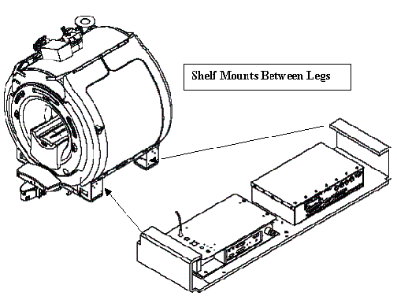
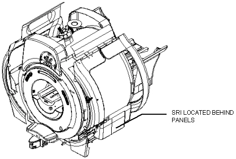
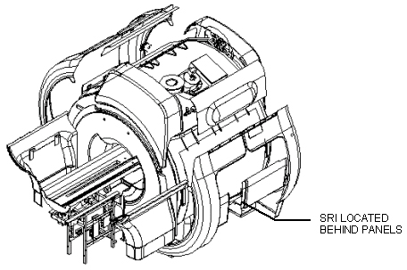
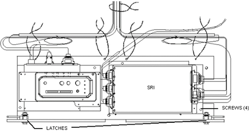
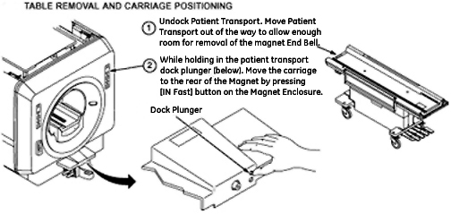
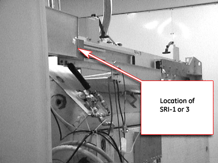

Operating Documentation
Direction 5133315-3, Rev# 14
Signa EXCITE HD 1.5T Service Methods
Module Version 1.0, Version Date 4/26/07
Operating Documentation |
| Required Persons | Preliminary Reqs | Procedure | Finalization |
|---|---|---|---|
| 1 | Not Applicable | 30 mins | Not Applicable |
Procedure for replacement of the SRI (Scan Room Interface) assembly on a fixed site system.
| Last Update | 03/15/2006 |
Perform Lock-out Tag-out procedure, see OSHA Lockout Tagout Requirements.
The SRI can be located under either the right or left side of the magnet enclosure. Identify which side the SRI is on by locating the patient leads, the SRI will be on that side.
| NOTE: | For Excite HD the SRI is mounted at the factory on a shelf between the magnet front and rear left side legs. See Illustration 1 Remove the 4 bolts(2 on each leg) that attach the Shelf . Pull the entire assembly away from the magnet to gain access to all the connectors. |
Illustration 1: SRI Location

Remove the lower enclosure trim covers to expose the tray that holds the PAC and SRI. See Illustration 2 and Illustration 3.
Illustration 2: ACCESS TO MAGNET ENCLOSURE FRONT VIEW

Illustration 3: ACCESS TO MAGNET ENCLOSURE REAR VIEW

For Excite HD Remove the 4 bolts (2 on each leg) that attach the Shelf . Pull the entire assembly away from the magnet to gain access to all the connectors.
Disconnect the cables attached to the SRI. See Illustration 4.
| NOTE: | SRI-3 has multiple connections for the 8/16 channel switch and can be used in place of an SRI 2. SRI 3 and ExciteHD: uses the Sub D connection to connect the 16 channel switch. SRI 3 and PreExcite HD (11.x and prior) use the 2 fiber optic connections to connect the 8-channel switch. Make note of the cable connections during disassembly |
Remove four (4) screws holding SRI to tray. See Illustration 4.
Lift SRI off tray and remove.
Illustration 4: PAC/SRI TRAY

Re-position the table away from the magnet. See Illustration 5.
Illustration 5: Re-Position The Table Away From The Magnet

The SRI is located on the Right side (when facing magnet from front) on the upper slide rail, see Illustration 6.
Illustration 6: The SRI Is Located On The Right Side

Disconnect all cables to the SRI.
Place new SRI on tray.
Install four (4) screws.
Connect the cables.
Slide tray under magnet and secure latches.
For Excite HD Replace the 4 bolts (2 on each leg) that attach the Shelf .
Replace enclosure trim panels.
Remove tag-out tags and locksw.
Restore power.
Perform good by scan. Do not use “geservice” as patient ID, as this will verify proper operation of Coil-ID.